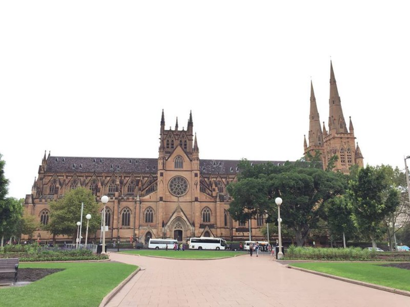

Opera HouseFilled with music and magic the Opera house is not only artistically designed but is often filled with some thousands of people watching the amazing shows and concerts regularly put on throughtout the year by famous musicians. |

Source: Frances Gunn | https://unsplash.com/
|

Source: JJ Harrison | https://en.wikipedia.org/wiki/Sydney_Harbour_Bridge
|
Harbour BridgeThis 48.8m long steel bridge over the Sydney harbour carries hundreds of cars, bikes, pedestrians, and trains each day. This beautiful construction has been standing for almost 90 years and is one of the most iconic structures representing Sydney. |
Luna ParkSince 1935, Luna Park has always been a kooky theme park filled with classic rides with loads of fun and laughs for kids and adults alike. Even though in 2010 it was officially registered on the State Heritage Register , it has still been bringing in children's parties, weddings, school excursions and galas to this day. Just be sure to bring your own food as you may find your wallet run dry if you get hungry while visiting. Buy your tickets HERE! |

Source: Jan Smith | https://www.flickr.com/photos/26085795@N02/5808129792
|
|
 |
St Mary's CathedralSt Mary's Cathedral is the image of grace and beauty as it stands almost in the centre of Sydney and next to the peaceful Hyde Park. The first St Mary's was built on land given to the church in 1820 and has been enhanced throughout the centuries. It is one of Sydney's most treasured historical buildings architecturally appreciated as one of the most admirable classic English-style Gothic Churches in the world. |